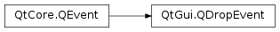

QDropEvent¶
Inherited by: QDragMoveEvent, QDragEnterEvent
Synopsis¶
Functions¶
- def
acceptProposedAction() - def
dropAction() - def
keyboardModifiers() - def
mimeData() - def
mouseButtons() - def
pos() - def
posF() - def
possibleActions() - def
proposedAction() - def
setDropAction(action) - def
source()
Detailed Description¶
The
PySide2.QtGui.QDropEventclass provides an event which is sent when a drag and drop action is completed.When a widget
accepts drop events, it will receive this event if it has accepted the most recentPySide2.QtGui.QDragEnterEventorPySide2.QtGui.QDragMoveEventsent to it.The drop event contains a proposed action, available from
PySide2.QtGui.QDropEvent.proposedAction(), for the widget to either accept or ignore. If the action can be handled by the widget, you should call thePySide2.QtGui.QDropEvent.acceptProposedAction()function. Since the proposed action can be a combination ofQt.DropActionvalues, it may be useful to either select one of these values as a default action or ask the user to select their preferred action.If the proposed drop action is not suitable, perhaps because your custom widget does not support that action, you can replace it with any of the
possible drop actionsby callingPySide2.QtGui.QDropEvent.setDropAction()with your preferred action. If you set a value that is not present in the bitwise OR combination of values returned byPySide2.QtGui.QDropEvent.possibleActions(), the default copy action will be used. Once a replacement drop action has been set, callPySide2.QtCore.QEvent.accept()instead ofPySide2.QtGui.QDropEvent.acceptProposedAction()to complete the drop operation.The
PySide2.QtGui.QDropEvent.mimeData()function provides the data dropped on the widget in aPySide2.QtCore.QMimeDataobject. This contains information about the MIME type of the data in addition to the data itself.
-
class
PySide2.QtGui.QDropEvent(pos, actions, data, buttons, modifiers[, type=Drop])¶ Parameters: - data –
PySide2.QtCore.QMimeData - actions –
PySide2.QtCore.Qt.DropActions - type –
PySide2.QtCore.QEvent.Type - pos –
PySide2.QtCore.QPointF - modifiers –
PySide2.QtCore.Qt.KeyboardModifiers - buttons –
PySide2.QtCore.Qt.MouseButtons
Constructs a drop event of a certain
typecorresponding to a drop at the point specified byposin the destination widget’s coordinate system.The
actionsindicate which types of drag and drop operation can be performed, and the drag data is stored as MIME-encoded data indata.The states of the mouse buttons and keyboard modifiers at the time of the drop are specified by
buttonsandmodifiers.- data –
-
PySide2.QtGui.QDropEvent.acceptProposedAction()¶ Sets the drop action to be the proposed action.
See also
PySide2.QtGui.QDropEvent.setDropAction()PySide2.QtGui.QDropEvent.proposedAction()PySide2.QtCore.QEvent.accept()
-
PySide2.QtGui.QDropEvent.dropAction()¶ Return type: PySide2.QtCore.Qt.DropActionReturns the action to be performed on the data by the target. This may be different from the action supplied in
PySide2.QtGui.QDropEvent.proposedAction()if you have calledPySide2.QtGui.QDropEvent.setDropAction()to explicitly choose a drop action.
-
PySide2.QtGui.QDropEvent.keyboardModifiers()¶ Return type: PySide2.QtCore.Qt.KeyboardModifiersReturns the modifier keys that are pressed.
-
PySide2.QtGui.QDropEvent.mimeData()¶ Return type: PySide2.QtCore.QMimeDataReturns the data that was dropped on the widget and its associated MIME type information.
-
PySide2.QtGui.QDropEvent.mouseButtons()¶ Return type: PySide2.QtCore.Qt.MouseButtonsReturns the mouse buttons that are pressed..
-
PySide2.QtGui.QDropEvent.pos()¶ Return type: PySide2.QtCore.QPointReturns the position where the drop was made.
-
PySide2.QtGui.QDropEvent.posF()¶ Return type: PySide2.QtCore.QPointFReturns the position where the drop was made.
-
PySide2.QtGui.QDropEvent.possibleActions()¶ Return type: PySide2.QtCore.Qt.DropActionsReturns an OR-combination of possible drop actions.
-
PySide2.QtGui.QDropEvent.proposedAction()¶ Return type: PySide2.QtCore.Qt.DropActionReturns the proposed drop action.
-
PySide2.QtGui.QDropEvent.setDropAction(action)¶ Parameters: action – PySide2.QtCore.Qt.DropActionSets the
actionto be performed on the data by the target. Use this to override theproposed actionwith one of thepossible actions.If you set a drop action that is not one of the possible actions, the drag and drop operation will default to a copy operation.
Once you have supplied a replacement drop action, call
PySide2.QtCore.QEvent.accept()instead ofPySide2.QtGui.QDropEvent.acceptProposedAction().
-
PySide2.QtGui.QDropEvent.source()¶ Return type: PySide2.QtCore.QObjectIf the source of the drag operation is a widget in this application, this function returns that source; otherwise it returns 0. The source of the operation is the first parameter to the
PySide2.QtGui.QDragobject used instantiate the drag.This is useful if your widget needs special behavior when dragging to itself.
See also
QDrag.QDrag()
© 2018 The Qt Company Ltd. Documentation contributions included herein are the copyrights of their respective owners. The documentation provided herein is licensed under the terms of the GNU Free Documentation License version 1.3 as published by the Free Software Foundation. Qt and respective logos are trademarks of The Qt Company Ltd. in Finland and/or other countries worldwide. All other trademarks are property of their respective owners.